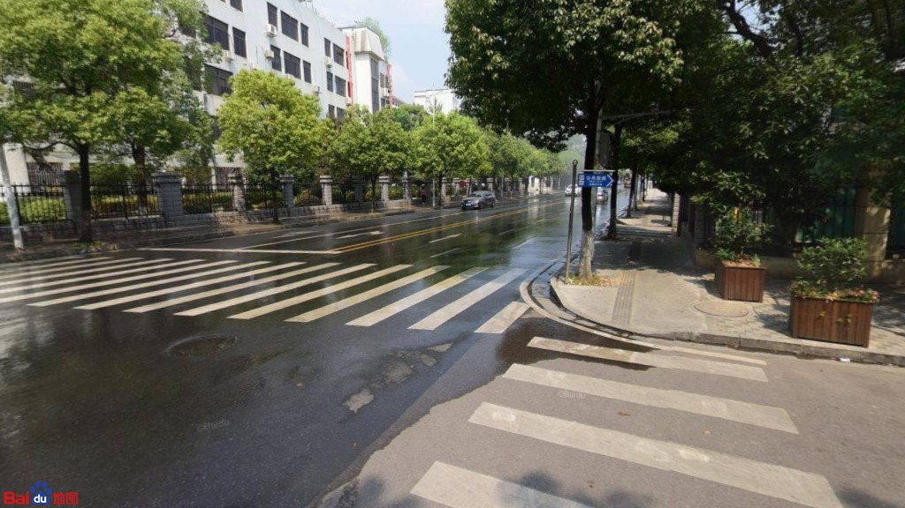

选择信息判断、场景对比，或骑行感受打分。
骑行环境体验预览DEMO EDITION
你愿意
多骑几分钟？
看看不同街景，试着提取信息、比较场景，或给骑行感受打分。
挑一个体验 →无需登录 · 打开即可开始
01 / 看街景02 / 做选择03 / 看体验流程
RIDE SCENE PREVIEW

ROUTE探索骑行街景每次进入 · 随机一组题目
01—06
体验内容街景信息提取多图场景选择骑行感受评分适配电脑与手机
CHOOSE YOUR EXPERIENCE
从一种方式开始
每个体验都从内置演示题库随机抽题。你可以换一套再看。
A SIMPLE FLOW
轻松看懂
实验怎么进行
题目会随机组合，回答过程简洁直接。
题目顺序和候选图片顺序会在每次进入时重新排列。
演示不会提交回答，方便你先了解页面和作答节奏。